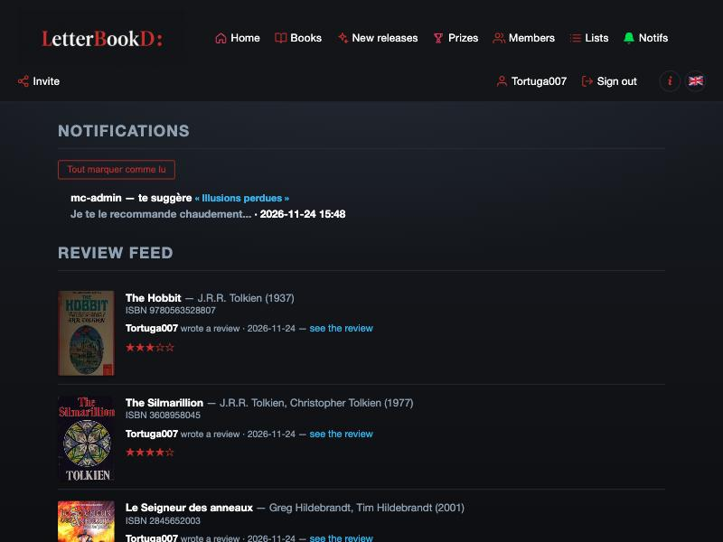

Notifications
Why it exists: Gather everything that concerns you personally: suggestions from other members, reactions to your reviews, and comments under your reviews. Further down is the feed of all recent reviews in your club.

Walkthrough
The page has two sections. 'Notifications' is at the top, with one line per event: the sender's username, the type of action ('suggests to you', 'reacted to', 'commented on'), and a link to the relevant book or review. A 'Mark all as read' button clears the badge on the bell.
At the bottom, 'Review feed' lists recent reviews posted in your club, each with its cover, book, book author, review author and star rating, plus a 'view review' link.
Action chains
Each row describes a trigger in the UI, the modal or form it opens, and the resulting effect.
| Trigger | Modal / Fields | Effect |
|---|---|---|
| 'Mark all as read' button | POST form. | Marks all your notifications as read. The bell at the top right changes from green to grey. Notifications stay in the history but are no longer counted as unread. |
| Link in a notification (book title, 'view review') | — | Opens the context: the book page, anchored to the commented review. |
| 'view review' link in the feed | — | Opens the book page, positioned on that review. |